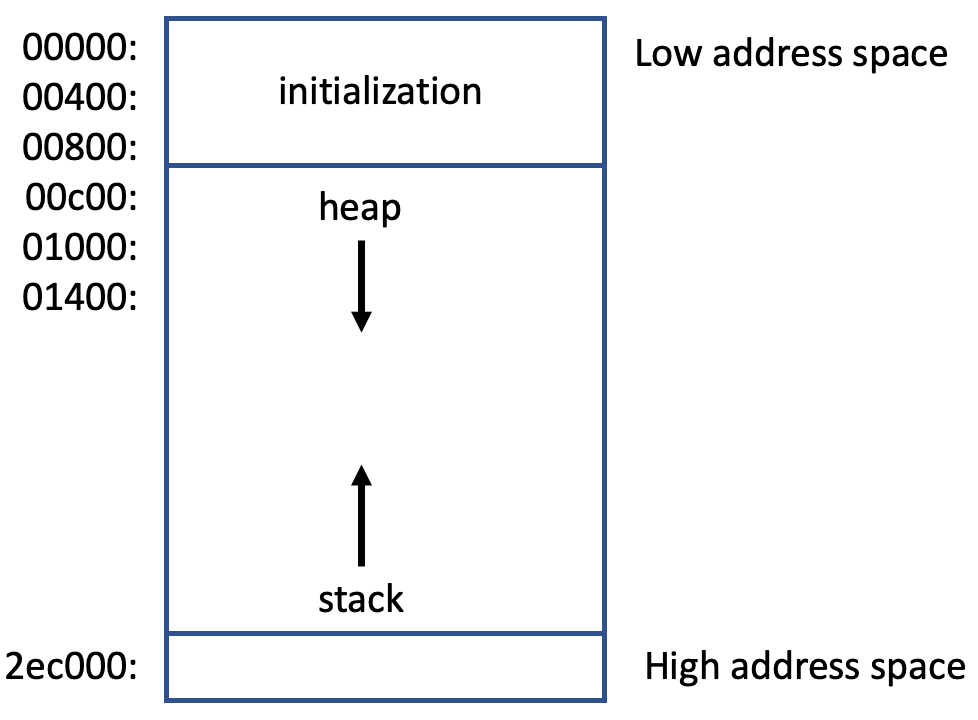

Memory Management in MicroPython
In the recent past, memory management has been a challenge for embedded systems. Before 2020 microcontrollers like the Arduino usually only came with a few kilobytes of RAM, and careful attention needed to be paid to each byte using clever memory management trickery. The memory management system in recent years has become much easier. Even a low-cost $4 Raspberry Pi Pico now comes with 264K RAM! This is an almost 100-fold increase over the older Arduino Uno which only had 2K of RAM. That being said, there are always developers that push their hardware to the limit, and knowing the basics of memory management is important to understand how embedded systems work.
MicroPython is very clever about how memory is allocated. It is very stingy about memory use and will only allocate memory for what is needed. This is very different from the standard Python that allocates memory for everything that is needed up-front assuming that most laptops, desktops and servers have gigabytes of RAM and virtual memory support. This is an important difference, and it is important to understand if you want to push the limits of your microcontroller.
This lab will cover the basics of memory management, and how to use the memory management system in MicroPython. We will cover the following topics:
- Memory Management Concepts: The Heap, Stack, and Garbage Collection
- Functions to show the amount of free and used memory and current memory usage
- Functions to manually allocate and free memory
- Functions to debug memory allocation
Memory Management Concepts

The memory management system is responsible for allocating and freeing memory. The memory management system must allocate memory for data variables, and for freeing this memory when a variable is no longer needed. The system is also responsible for allocating memory for the parameters used by functions, and for freeing memory when a function is no longer needed. You can read more about memory management on the MicroPython Memory Management Docs website.
The heap is the area of memory that is used to store general data. In MicroPython the heap is located in the lower memory and it grows upwards in memory address space. The exception is memory used as parameters to functions, which is stored in the stack.
The stack is the area of memory that is used to store all the parameters to function calls. In MicroPython the stack is located in the upper memory and it grows downwards in memory address space. If you are calling highly recursive functions, the stack will get a lot of use.
The garbage collector is a process to reuse memory that is no longer in use. The garbage collector is automatically run when the heap is full, but you can also run it manually to reclaim unused memory to get finer-grain control over memory usage and to avoid memory fragmentation.
In MicroPython most of these operations are done automatically for you. You don't really need to worry about how memory works unless you are reaching the limits of what your microcontroller can do.
One other key concept is continuous memory. If you are allocating a large amount of memory in an array or a long string, we need to allocate all this memory in one large chunk. As programs run for a long time memory becomes fragmented (many small free sections) and can't be used for storing large arrays.
You can read more about how MicroPython is clever about memory usage by reading the MicroPython Optimizations Docs website.
Functions to show free and used memory
We will be using the "gc" module to show the amount of free and used memory. "gc" orignally stood for "garbage collection", but the model has been generalized to perform other memory management tasks.
Here are the key functions to show the amount of free and used memory and current memory usage on a Raspberry Pi Pico with an RP2040 microcontroller: gc.mem_free() and gc.mem_alloc():
1 2 3 4 5 | |
results for RP2040:
1 2 | |
You can see that although the RP2040 chip has a specification of 264K of RAM, it only has 187,232 bytes of RAM available for program use. The other RAM us used to store the MicroPython interpreter software. You can also see that the heap is currently using 4,864 bytes of RAM. This is typical of the additional overhead that MicroPython requires to run a program.
Viewing Memory Layout
You can use the micropython.mem_info(1) function to view the memory layout of the MicroPython interpreter. This function returns a list of tuples, each tuple containing the address, size and type of each memory block. The address on the left of each row is the memory address of the start of the block within the heap. In MicroPython, memory blocks are each typically 16 bytes.
1 2 3 | |
results:
1 2 3 4 5 6 7 8 9 10 11 12 13 | |
This shows that the garbage collector is responsible for managing a total of 192,064 bytes of memory. The other numbers give you an indication of how fragmented you heap is.
- The number of 1-blocks is 52
- The number of 2-block spaces is 13
- The maximum block size is 64
- The maximum free size is 11,650
- The heap starts at memory location: 2000 84a0
Each of the letters represents the type of memory at that position on the heap:
| Letter | Description | ||| |.|Free memory| |h|head of a block of memory| |=|tail of a block of memory| |T|Tuple| |L|List| |D|Dictionary| |S|String| |A|Array or Byte Array| |F|Float| |B|Function BC| |M|Module|
If the heap is 192,064 bytes and each block is 16 bytes then there should be 12,004 blocks on the heap. If each row in the report displays 62 characters then there are 12,004/62=193 rows in the report. To keep the report short, the function will only show the rows that are not free. The report indicates that there are 181 lines all free blocks, so it will only show the non-free lines which in the example above is about six non-free rows in lower heap memory.
Functions to manually allocate and free memory
You can manually run the garbage collector using the gc.collect() functions. This function is used to force garbage collection exactly when you want to, not when the heap is full. This may occur at a time that is inconvenient for the program when it must be sending data at a specific speed.
Note
Still under development.
1 2 3 4 5 6 7 8 9 10 11 12 13 14 15 16 | |
Image Size
You can determine how much space we have available on the Pico flash after programming an ELF or UF2 file. For example, if we have an ELF file that's 1 MB and we were to program via openocd, then where should we offset my user data in flash? (i.e. XIP_BASE + OFFSET)
With an elf or uf2 file, using picotool info -a on it will show the start and end of the binary (the start is usually 0x10000000 unless you did something to change it).
Inside your code, you can use the symbols defined by the linker script __flash_binary_start (defined here) and __flash_binary_end (defined here) like this:
1 2 3 4 5 | |